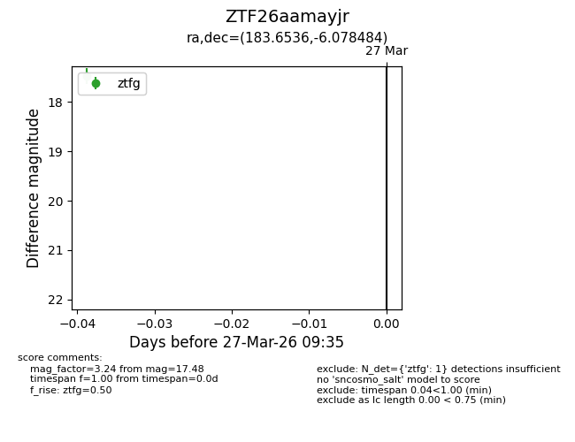
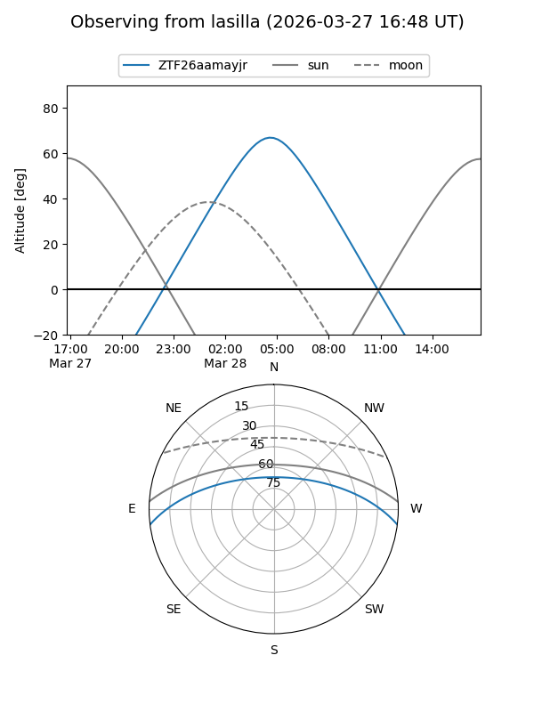
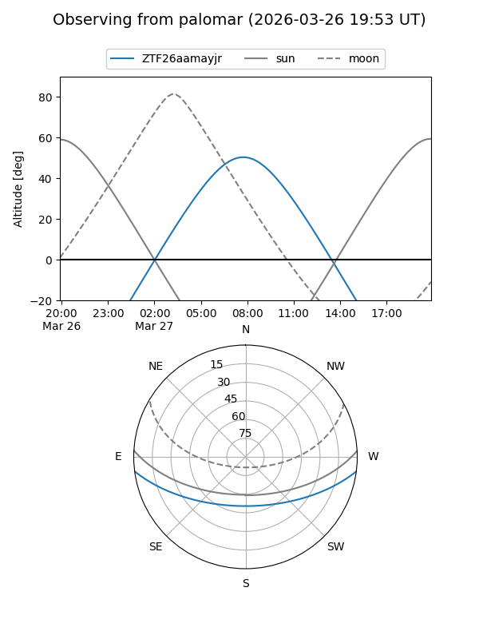

ZTF26aamayjr
Target ZTF26aamayjr at 2026-03-27 09:38
Aliases and brokers:
FINK: link
Lasair: link
ALeRCE: link
alt names
ZTF26aamayjr (ztf,fink_ztf)
Coordinates:
equatorial (ra, dec) = 183.6536,-6.07848
equatorial (HMS+DMS) = 12:14:36.85,-06:04:42.54
galactic (l, b) = (286.5692,+55.61903)
Flags:
Photometry:
last ztfg=17.48
1 ztfg detections
Lightcurve

Visibility


Additional plots